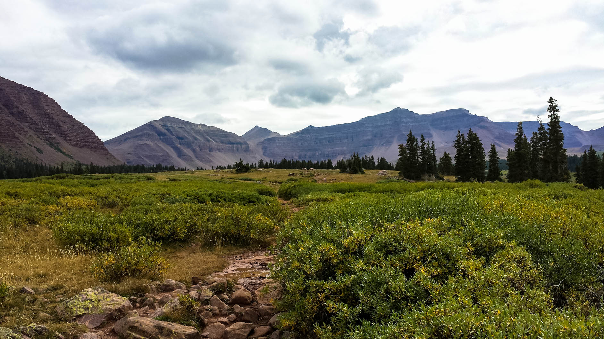
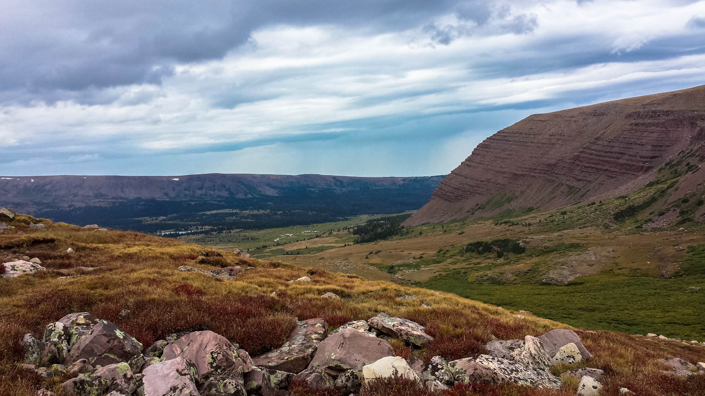
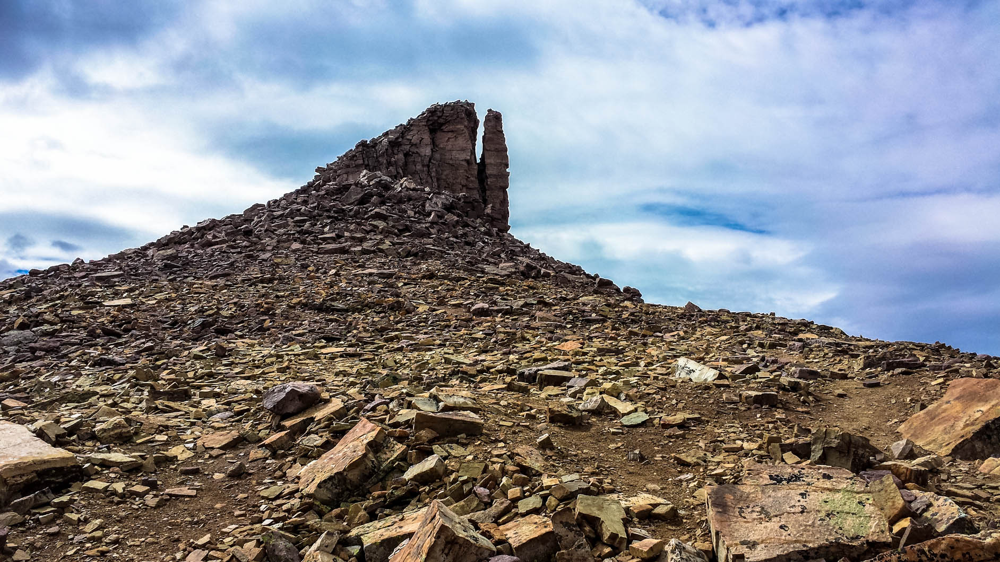
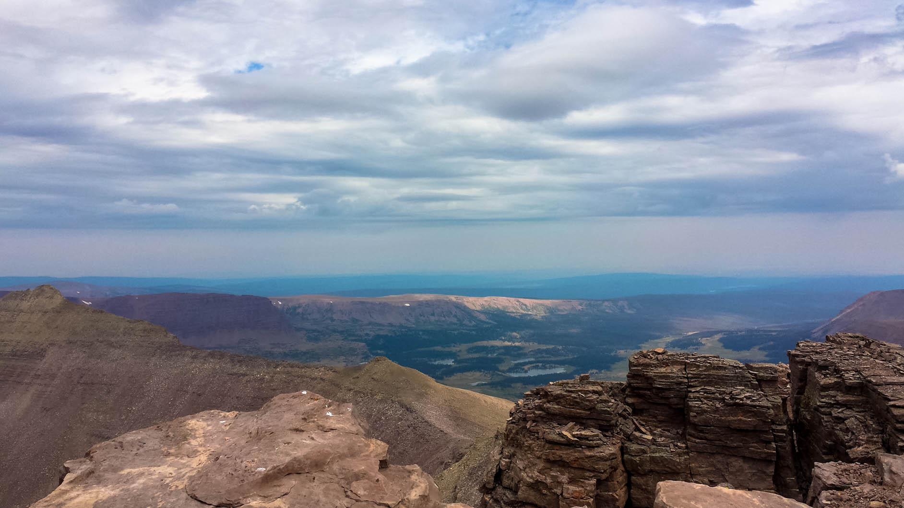
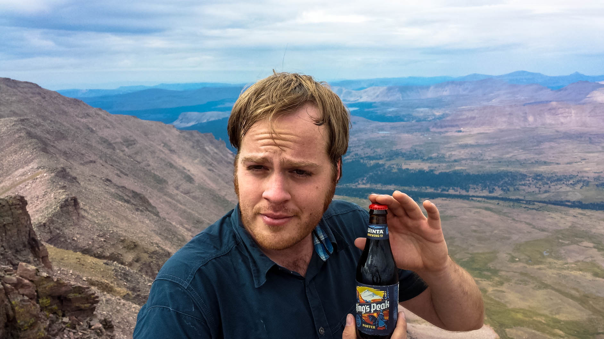

Back to trips | Just the photos, pleaseShow text
Day 1
TLDR; 30 miles. 9pm start - hike til midnight - up at 6 the next morning - summit and back to the car by 7:00pm.My friend Steve and I decided to have a go at the highest peak in Utah. We had a 3 day weekend but we didn't want to take too much of that time doing this. So we set out saturday night from Ogden, Utah and drove into Wyoming to then turn south back into Utah. Not too far off I80 in Wyoming, the roads turned into dirt and at times we were left guessing as to whether we were even on the right road anymore.
We eventually made it to the right place and hit the trailhead at 9pm. We hiked until midnight when we decided to set up the tent and call it a night.
Day 2
Up early, the next morning at around 6-6:30am greeted us with some spectacular scenery. We downed some granola bars and started the hike toward the summit.

If you look closely at the above photo, along the trail you can see him a bit ahead of me, and that saddle (gunsight pass) in the mountains on the left is where we were headed first.
The trail started at about 9,200ft. and by this point it had flattened out at 10,500ft for a while until making an incline up to Gunsight pass which is at just over 12,000ft.
Once over gunsight pass, one can then decend back down to about 10,500ft and go a longer way around to the basin that gets you to King's Peak, but we chose to traverse over a bit and deal with some loose rocks and bouldering rather than lose any time and altitude. (the above photo is looking northwest back from where we came however)
We made the traverse and walked across the basin towards the peak which was now visible. Most people were going over to the far west side and climbing up the ridge which proved to be less steep than the route Steve and I chose. Looking up toward the peak, Steve said something to the effect of, "why do people even bother going all that way around? let's just go straight up." and of course I couldn't turn that down, so I followed him up, even though I shortly realized why most people go the longer way.
Summit
 We made the summit at around 11:00am and hung out at the top for about 30 minutes at which point I took an item of much importance out of my bag. A bottle of Uinta Brewery's Kings Peak Porter.
After sharing a few swigs and hanging out at the top some we noticed some weather moving in and decided it best to start the long 15 miles back we had to the car.

it took a bit of time getting down and with the rain coming in moistening the moss on the slick rocks, it didn't take much to get me to fall. Nothing broken at least, but I got a few bloody scrapes and bruises. No big.
We stopped by the tent to scoop it up and have a little break, but we were soon on our way again, and after a bit more walking, at long last with sore feet and tired legs, we were back at the car around 7pm. Making it 24 miles that day and 22 hours total for the 30 miles including the 13,527ft King's Peak.